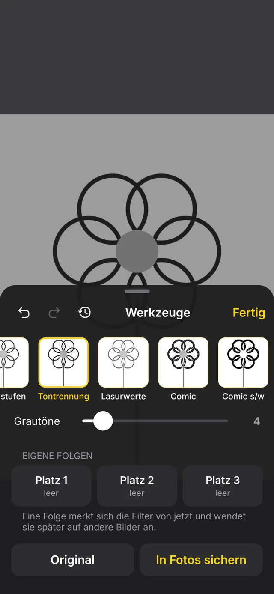
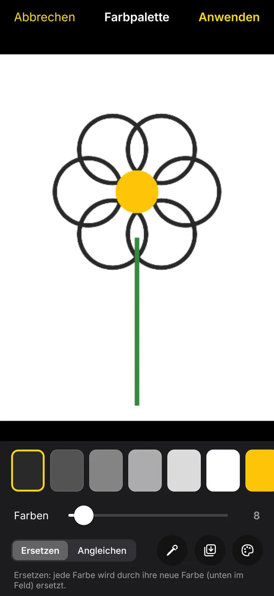
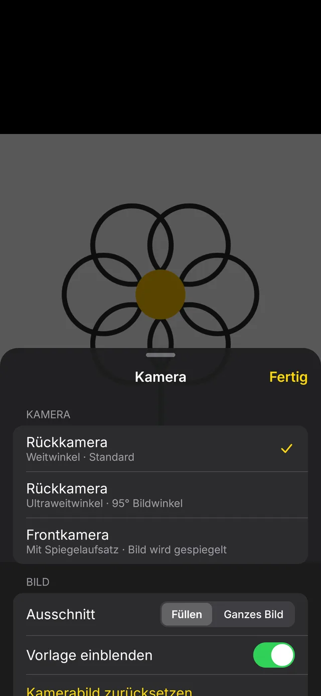
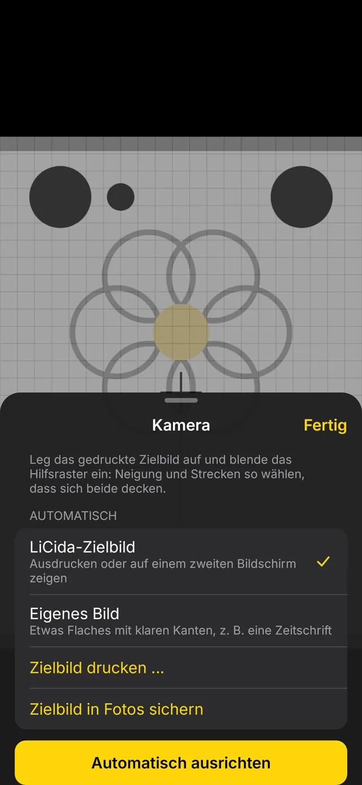
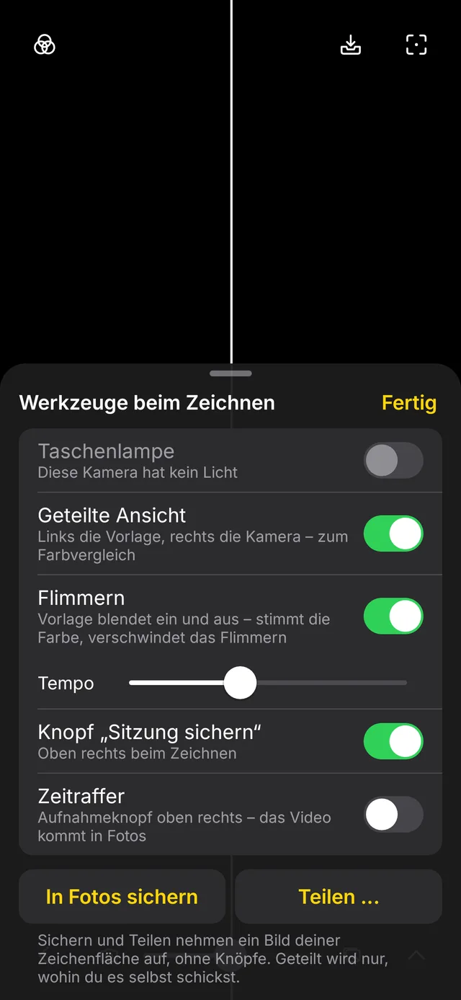
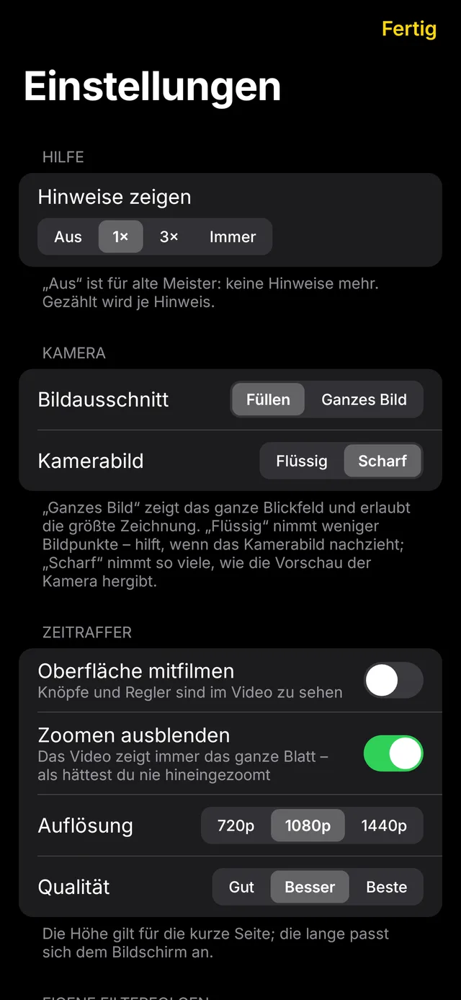

LiCida
LiCidaDas Zeichengerät
der alten Meister.
Eine Camera lucida spiegelt das Motiv auf dein Papier. Maler übertragen damit seit über 200 Jahren Umrisse. LiCida macht dasselbe mit der Kamera deines Handys. Vorbild ist die iOS-App „Camera Lucida“, neu gebaut für Android und gestaltet nach Apples Human Interface Guidelines.
So geht's
In drei Schritten
Handy über das Papier, Vorlage wählen, nachzeichnen.
1 · Aufbauen
Stell das Handy mit der Kamera nach unten fest über das Papier, etwa auf einen Halter, ein Stativ oder einen Stapel Bücher.
2 · Einrichten
Ein Bild aus Fotos oder Dateien wählen und mit zwei Fingern so legen, wie es aufs Papier soll.
3 · Zeichnen
Kamera und Vorlage sind jetzt gekoppelt. Du kannst bis 30× zoomen, scharfstellen und die Belichtung sperren, während du nachzeichnest.
Bilder
Die Oberfläche
Eine schwarze Fläche mit schwebenden Glasknöpfen, aufgebaut wie die Kamera-App. Beim Zeichnen lenkt nichts ab.









Sitzungen
Später weiterzeichnen
Eine Sitzung merkt sich Vorlage, Filter, Lage, Kamera und Ausrichtung, dazu einen Schnappschuss deines Blatts.
- Blatt wiederfinden: Der Schnappschuss liegt über dem Kamerabild, du legst das Papier passend hin.
- Oder automatisch: LiCida sucht Verschiebung, Drehung und Größe per Bildabgleich und schiebt die Vorlage mit.
- Nur auf dem Gerät: Nichts wird hochgeladen.

Groß zeichnen
An der Wand zeichnen
Im Projektor-Modus bleibt das Kamerabild schwarz, nur die Vorlage leuchtet. Eine Bluetooth-Tastatur, ein Controller oder ein Selfie-Auslöser steuern Zoom, Deckkraft und Flimmern, während du an der Wand stehst.
- Tasten frei belegen: Ab Werk wie im Original, E Q zoomen, W A S D schieben.
- Zeitraffer filmt trotzdem mit: Die Kamera läuft weiter.

Funktionen
Weitere Funktionen
Alle Funktionen sind enthalten. Es gibt keine Käufe in der App.
Filter, die aufeinander wirken
Graustufen, Tontrennung, Lasurwerte, Comic, Neon, Kanten, Schwellwert, Raster und Eckmarken. Dazu ein Verlauf und drei eigene Folgen.
Farbpalette
Fasst die Vorlage zu wenigen Farben zusammen. Beim Zeichnen blendest du Farbe für Farbe aus, etwa zum Ausmalen nach Farben.
Automatisch ausrichten
Druck das Zielbild aus, leg es hin und tippe. LiCida entzerrt dann das Kamerabild, als schaue die Kamera senkrecht von oben.
Zeitraffer
Aus einer Stunde Zeichnen wird eine Minute Video. Androids eigener Encoder legt es direkt in deine Fotos.
Geteilte Ansicht und Flimmern
Links die Vorlage, rechts das Papier. Oder die Vorlage blendet ein und aus: Stimmt die Farbe, verschwindet das Flimmern.
Rundgang und Anleitung
Beim ersten Start zeigt ein Rundgang jeden Knopf. Die deutsche Anleitung steht in der App und als PDF zum Ausdrucken bereit.
Datenschutz
Ohne Internetzugang
LiCida sieht nur das eine Bild, das du auswählst, und das Kamerabild. Die App hat keinen Internetzugang und kann deshalb nichts senden.
Laden
Herunterladen
Kostenlos, Version 0.2 Beta für Android 10 und neuer.
F-Droid
Paketquelle in F-Droid hinzufügen, dann LiCida suchen und installieren.
Quelle in F-Droid hinzufügen ›
Fingerabdruck der Paketquelle
8DA9DEF44C65856A1B098DB7BF876D48514997EF17C7256E23E91EAC6C486500
APK
Direkt herunterladen und installieren. LiCida fragt nur nach der Kamera.
App-Signatur
SHA-256: 7aca15dc655f1581b554f0a2c93cf8eae271330d5c2684dca47a1a26e45da75d
Quelltext
Der vollständige Quelltext und alle Versionen. Fehler und Ideen kannst du im Issue-Tracker melden.
Prüfsummen: SHA256SUMS · Beta, weil LiCida bisher nur auf wenigen Geräten getestet ist.